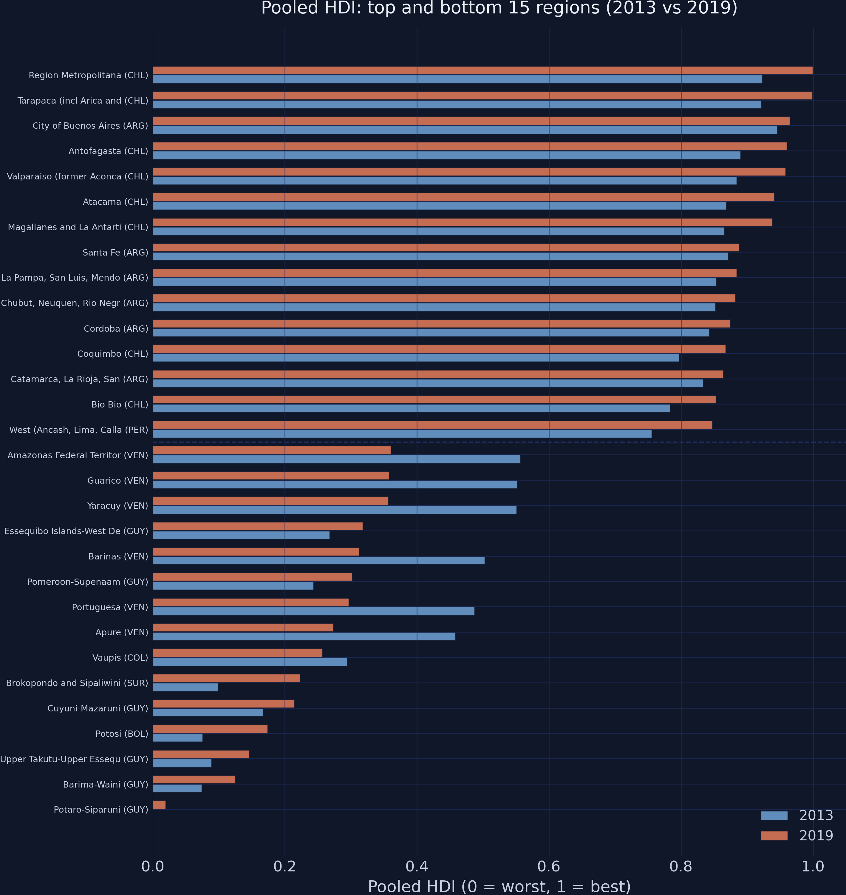
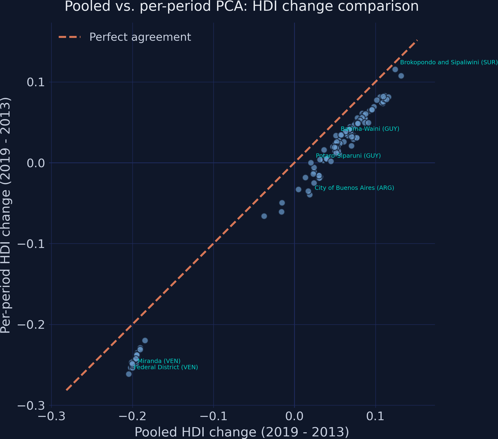
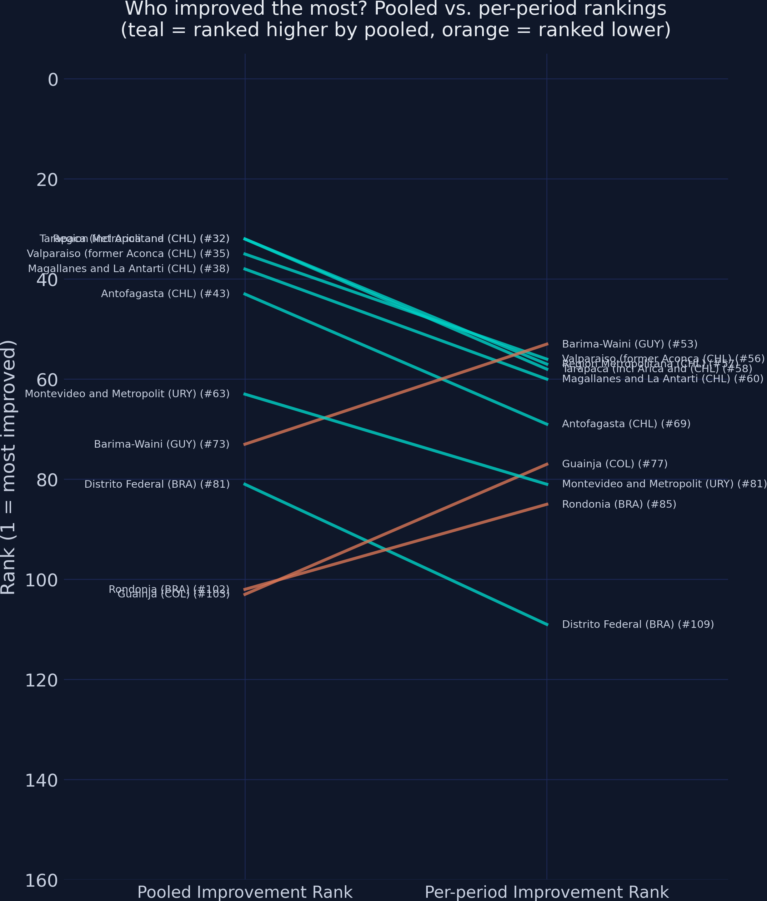
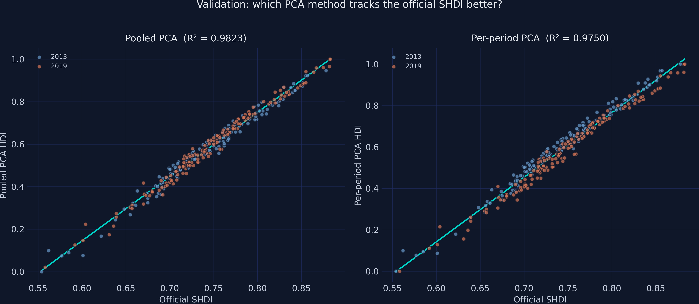
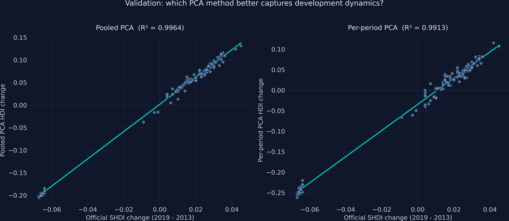
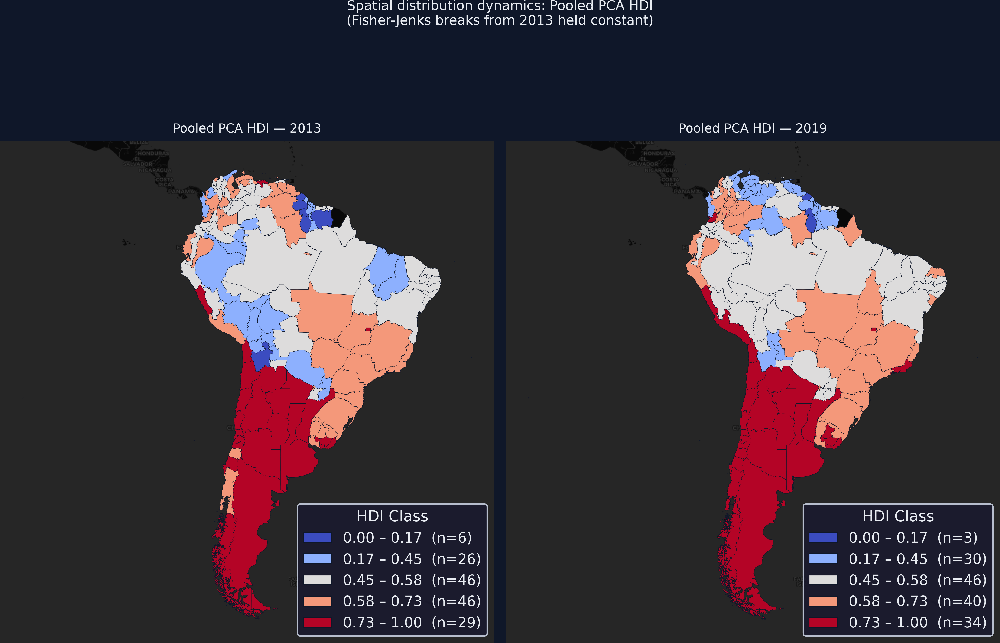
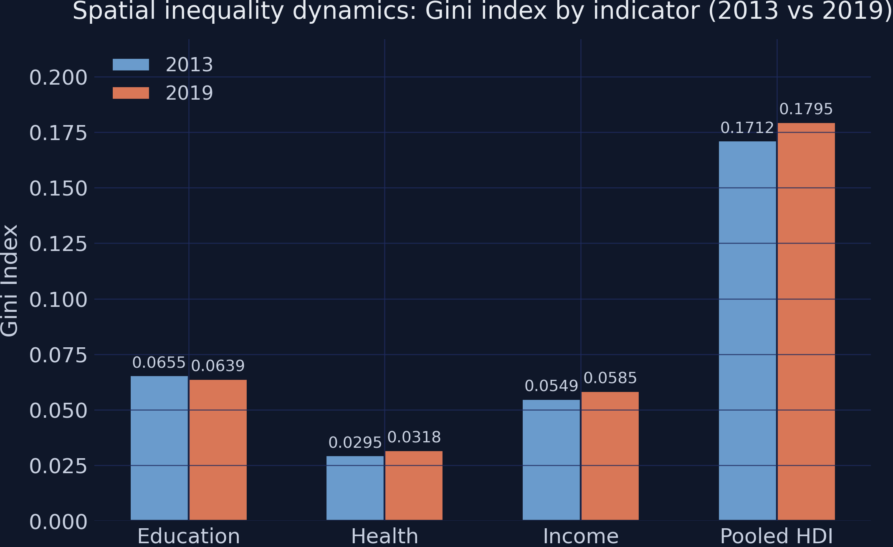

The pooled mean \(\bar{X}_j^{\text{pool}}\) and SD \(\sigma_j^{\text{pool}}\) are computed from all 306 rows at once, then applied to every observation in every period.
Per-period shifts the baseline each year; pooled fixes it — so 0.926 → 0.946 is a genuine z-score rise.
One eigen-decomposition on the stacked data yields a single, fixed set of weights
Pooled eigenvalues \([2.173,\,0.563,\,0.264]\); PC1 weights \([0.564,\,0.545,\,0.620]\) — the same recipe for 2013 and 2019.
Because the weights come from the pooled data, the index formula no longer drifts between periods.
scikit-learn confirms it: fit_transform on stacked data is pooled PCA
from sklearn.preprocessing import StandardScalerfrom sklearn.decomposition import PCAscaler = StandardScaler() # POOLED: fit on ALL 306 rowsZ = scaler.fit_transform(df[cols])pca = PCA(n_components=1) # one set of weights for both periodsdf["pc1"] = pca.fit_transform(Z)[:, 0]
PC1 captures 72.4% of variance — strong, but real data is not one-dimensional
The fixed yardstick reveals a net development shift of +0.144 that per-period PCA zeroes out
+0.144
pooled PC1 mean: \(-0.072\) in 2013 \(\to\)\(+0.072\) in 2019 · net progress, invisible under per-period PCA
With a fixed scale, the 2019 HDI bars consistently extend past 2013

Pooled HDI, top and bottom 15 regions. Orange (2019) vs steel (2013); the dashed line splits the groups.
The Resolution
Act III
The two methods disagree on the direction of change for 16 of 153 regions

Pooled vs per-period HDI change. The dashed 45° line is perfect agreement; most points sit below it.
High rank agreement, but consequential re-orderings: Spearman ρ = 0.982

Improvement-rank comparison. Crossing lines mark where the two methods re-order who improved most.
Validated against the official SHDI, pooled PCA wins on both levels and dynamics
Comparison
Pooled \(R^2\)
Per-period \(R^2\)
Levels (vs SHDI)
0.9823
0.9750
Changes (vs SHDI)
0.9964
0.9913
The official SHDI uses a fixed geometric-mean formula across years — so it tracks the fixed-yardstick pooled index more tightly.
Pooled PCA reproduces the official benchmark across periods with almost no scatter

Validation against the official SHDI: pooled (left) clusters both periods tightly on the fit line; per-period (right) scatters wider.
Tracking dynamics is the real test — pooled change fits the SHDI change almost exactly

SHDI change validation: pooled (left, R² = 0.996) falls almost on the line; per-period (right, R² = 0.991) disperses more.
A fixed classification makes the map honest: 40 regions climbed, 25 fell

Pooled-PCA HDI choropleths, 2013 vs 2019, with Fisher-Jenks breaks fixed from 2013. Any colour change is a real threshold crossing.
Education converged, but income and health diverged — overall inequality rose

Gini index by indicator, 2013 vs 2019. Education’s Gini falls; health and income rise.
Does PCA make the index “true”? No — it makes it comparable
Objection. PC1 discards 28% of the variance and the weights are sample-specific — adding or removing regions changes every score.
Response. Correct, and worth stating plainly. Pooled PCA does not claim a true index — it guarantees a fixed yardstick across time. PC2 (19%) may hold real structure; the index is relative to this sample. What pooling buys is comparability, validated at \(R^2 = 0.98\) against the official SHDI.
Fit the standardization and the weights on the stacked data, and the yardstick stops moving.